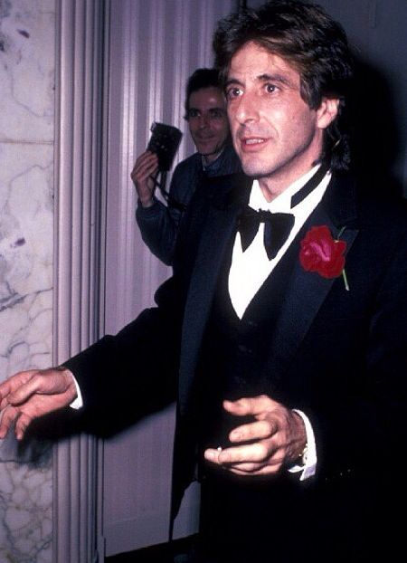

Аль Пачіно — головний актор фільму “Author! Author!” (1982)
Зміст
Біографія
Аль Пачіно — один із найвпливовіших акторів американського кіно ХХ століття, відомий своїми драматичними ролями та глибоким психологічним підходом до персонажів.
Народився у 1940 році в Нью-Йорку. Його акторська стратегія базується на методі повного занурення в роль, що забезпечує високу емоційну автентичність на екрані.
Роль у фільмі “Author! Author!” (1982)
У фільмі 1982 року актор виконав головну роль драматурга Івана Траваліана.
Це драматично-комедійний проєкт, де персонаж стикається з професійною кризою, сімейними викликами та творчим пошуком. Його гра стала ключовим драйвером емоційного впливу фільму.
Персонаж Іван Траваліан
Образ письменника поєднує інтелект, емоційність та внутрішній конфлікт. Актор використовує міміку, паузи та інтонацію для підсилення драматичного ефекту.
Особливо виразними є сцени творчої кризи, де персонаж демонструє психологічну глибину та складну мотивацію.
Значення ролі
Роль у фільмі 1982 року посилила позиціонування актора як універсального виконавця складних драматичних ролей.
Критики відзначали емоційну інтенсивність та професійний рівень виконання ролі.
Кар'єра та професійний розвиток
Кар'єра актора охоплює театр, кіно та телебачення. Він відомий стратегічним вибором ролей та стабільним професійним зростанням у кіноіндустрії.
У 1980-х роках актор активно брав участь у драматичних кінопроєктах, формуючи власний унікальний стиль гри.
Акторські особливості
Ключові сильні сторони
- Драматична експресія
- Методична акторська техніка
- Глибокий аналіз персонажів
- Сценічна майстерність
Етапи професійного розвитку
- Театральна освіта
- Перші ролі в кіно
- Головні ролі у великих фільмах
- Міжнародне визнання
Відомі фільми
| Рік | Фільм | Тип ролі |
|---|---|---|
| 1982 | Author! Author! | Головна роль |
| 1972 | The Godfather | Драматична роль |
| 1983 | Scarface | Культова роль |
Додаткова інформація
Актор вважається іконою кінематографу, а його стиль гри став еталоном для багатьох поколінь акторів. Його творчість демонструє синергію таланту, дисципліни та стратегічного підходу до вибору ролей.
Завдяки своїй унікальній харизмі та глибокому зануренню в ролі, він зберігає високий рівень популярності та професійної релевантності протягом десятиліть.